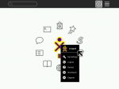

Today: 4,225,889 Downloads 3,434 Code Commits 4,443 Forum Posts 166 Bugs Tracked Home and Education - 1573 pakietów (Linux), 2000 wszystkie systemy
15671 projects tagged "Linux" 10095 projects tagged "C" 1011 projects tagged "education" 1655 projects tagged "JavaScript" 608 projects tagged "Ruby"
JavaScript - 21% Ruby - 13% Python - 8% Java - 8% Shell - 8% PHP - 7% C - 6% C++ - 4% Perl - 4% Objective-C - 3%
57926 registered users 3504 hosted projects
17254 registered users 1392 hosted projects
[046] Android [1099] Console [758] Development [604] GNOME [654] KDE [031] Kernel [1847] Networking [630] X11


../../src/${PACKAGE_NAME}-${VER}/configure --prefix=$PREFIX
make -j 2 MAKEINFO=true
make -j 2 install MAKEINFO=true
BOOT_IMAGE=/boot/vmlinuz-3.5.3 root=/dev/sda2 rw init=/bin/start_kanapi /usr/sbin/chroot /home/kanapi/kanapi_base_system/kanapi_system /init